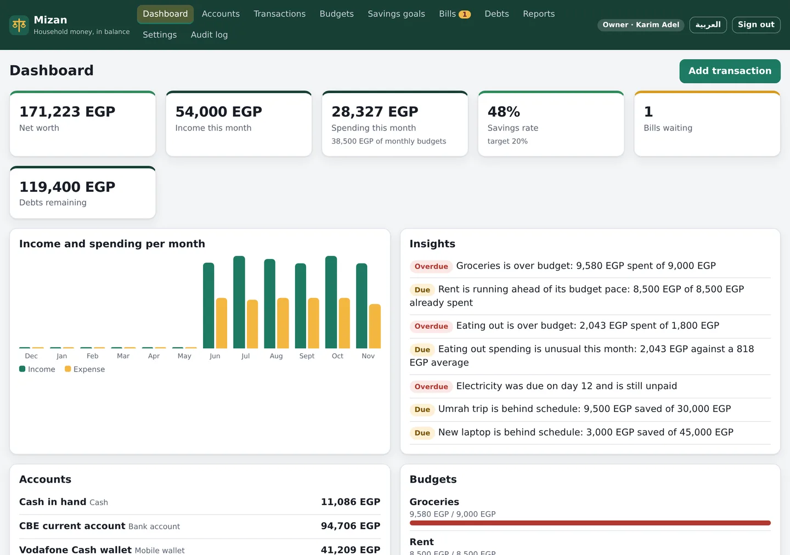
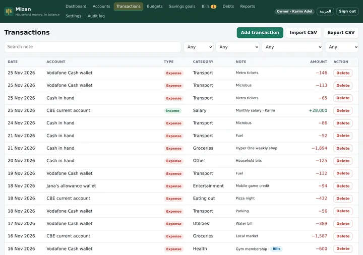
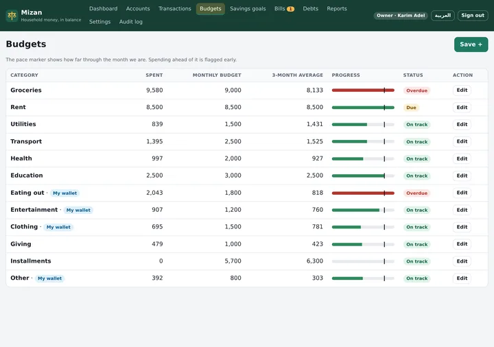
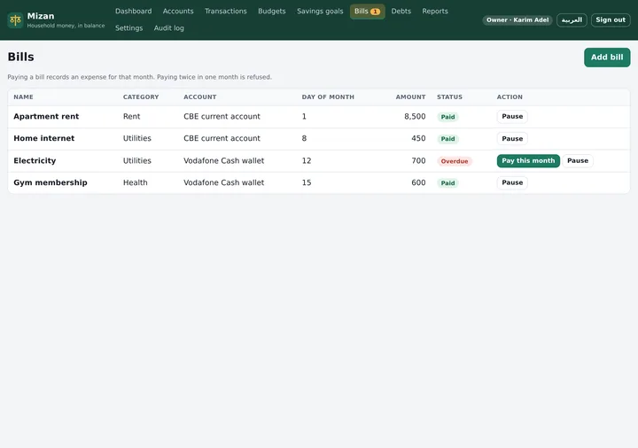
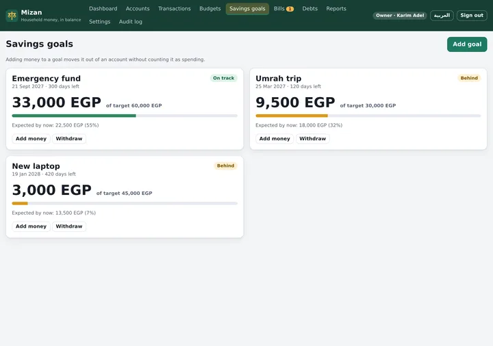
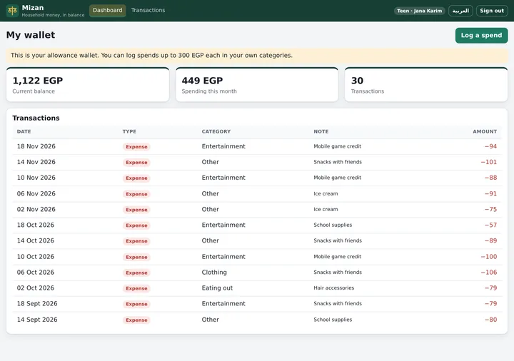
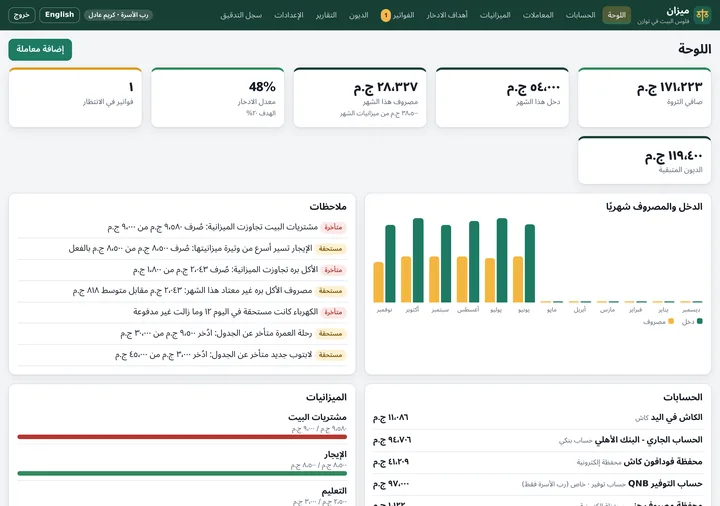
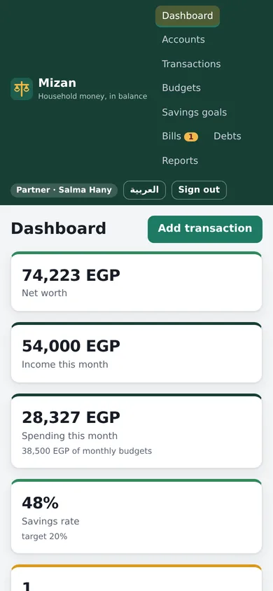

PORTFOLIO DEMO / BUILT / LIVE DEMO
Mizan
Household money, in balance. Every pound accounted for, in plain view.

ACTUAL BUILDMizan · Owner dashboard. Fictional family, accounts and transactions.
The problem
A household's money is scattered: cash in a drawer, a bank account, a mobile wallet, and a teenager's allowance. Bills are remembered a day late, the car installment schedule lives in a notebook, nobody can say what the family is worth today, and the monthly budget conversation starts from a guess.
What was built
A finance manager for one family with four roles. The owner and partner record income, expenses and transfers across cash, bank and wallet accounts in whole Egyptian pounds, with categories and monthly budgets. Recurring bills are paid month by month, never the same month twice, and pausing a bill stops it until resumed. Debts carry a principal, a fixed installment and a start month; installments are paid strictly in order and a paid-off debt refuses more. Savings goals collect money moved in from an account and can give it back. Reports show twelve months of income against spending, a category breakdown, net worth and a savings rate against the family's target. Insights flag an over-budget category, one running ahead of pace, an unusual spend, an overdue or upcoming bill, a goal behind schedule and a debt that fell behind. Transactions import and export as CSV. One account can be marked private and disappears from everyone else's balances and reports. The teen sees only her own allowance wallet, with a per-spend limit the owner sets. A read-only advisor role follows the whole picture without touching it. The interface works in Arabic (right to left) and English, and on a phone.
What changes for the family
Before. Balances are mental arithmetic. The electricity bill is noticed when it is late. The teen asks for money and nobody remembers what she already spent. Deleting a mistaken entry breaks the paper trail.
After. The server refuses to spend money an account does not have. An unpaid bill shows as overdue on the dashboard. The teen logs her own spends inside her limit and her categories. Every money action lands in an audit log with who did it, and deleting a payment makes the bill due again instead of vanishing.
Why it matters to a household
Families stick with a money habit when the picture is honest and current. The demo is built around that moment: open the dashboard and the truth is there. These are designed situations, not measured results from a real family.
The approach
No framework and no build step: plain JavaScript pages, one serverless API function and one logic file that holds every rule (validation, balances, budgets, bills, installment schedules, goals, insights, per-role views, the deterministic sample family). The same file runs in the API, the browser and the test suites. Permissions are enforced on the server on every operation, create operations carry idempotency keys so a repeated request never moves money twice, CSV cells are escaped against spreadsheet formulas, and the audit log records each money action with its actor.
The result
A live demo anyone can open. Sign in as the owner (PIN 1111), partner (2222), advisor (3333) or teen (4444); the PINs are on the sign-in screen. The sample family has 5 accounts, 16 categories with budgets, 3 recurring bills with one overdue, 3 debts with installment schedules, 3 savings goals and six months of household activity. Verification: 24 unit tests and 135 browser and API checks run to completion against the live site, covering forged tokens, malformed and oversized bodies, every role's permissions, what each role must not see, overdraft and validation refusals, transfers, teen limits, bill payment and reversion on delete, installment order, goal rules, CSV import with per-row errors, idempotent keys, hostile text shown as plain text, Arabic RTL and phone layouts.
Evidence & production limits
One shared demo family: everyone sees and changes the same data. State is kept in server memory only, so it resets about every six hours and whenever the server instance restarts. Sign-in is a PIN printed on the sign-in screen, so it must not hold real financial data. The family, accounts and transactions are fictional.
Known gaps: no bank connection and no real money movement, no database, no real authentication, no email, SMS or push reminders, EGP only with no multi-currency, and CSV import accepts only the template the export produces. Some server error messages stay in English on the Arabic screens. Direction, scope and delivery: Nada Gamal.
Next chapter
A real database with per-family accounts, bank and wallet statement imports, bill reminders over email or WhatsApp, multi-currency with exchange rates, and shared budgets between two households would be the next implementation steps.
Inside the build
Open any preview to see the full capture. Captures show demonstration content, not evidence of client use.






